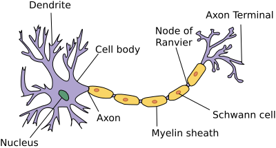

Neural Network¶
Note
A neural network is a network or circuit of neurons, composed of artificial neurons or nodes.
We will mainly discuss backpropagation here.
We will discuss it in more detail in the course “deep learning”.
Neuron¶
a neuron takes input \(x \in \mathbb{R}^{d}\), multiply \(x\) by weights \(w\) and add bias term \(b\), finally use a activation function \(g\).
that is:
it is analogous to the functionality of biological neuron.

some useful activation function:
linear regression’s forward process is a neuron with identity activation function.
logistic regression’s forward process is a neuron with sigmoid activation function.
Structure¶
building neural network is analogous to lego bricks: you take individual bricks and stack them together to build complex structures.

we use bracket to denote layer, we take the above as example
\([0]\) denote input layer, \([1]\) denote hidden layer, \([2]\) denote output layer
\(a^{[l]}\) denote the output of layer \(l\), set \(a^{[0]} := x\)
\(z^{[l]}\) denote the affine result of layer \(l\)
we have:
where \(W^{[l]} \in \mathbb{R}^{d[l] \times d[l-1]}\), \(b^{[l]} \in \mathbb{R}^{d[l]}\).
Prerequesities for Back-Propagation¶
suppose in forward-propagation \(x \to y \to l\), where \(x \in \mathbb{R}^{n}\), \(y \in \mathbb{R} ^{m}\), loss \(l \in \mathbb{R}\).
then:
by total differential equation:
then we can connect \(\frac{\partial l}{\partial x}\) and \(\frac{\partial l}{\partial y}\) by:
here \(\frac{\partial y}{\partial x}\) is the jacobian matrix.
unlike other activation functions, calculate softmax depend on other neurons, so jacobian of softmax.
it is easy to check the jacobian of matrix-multiplication:
Back-Propagation¶
gradient descent update rule:
to proceed, we must compute the gradient with respect to the parameters.
we can define a three-step recipe for computing the gradients as follows:
1.for output layer, we have:
if \(g^{[N]}\) is softmax.
if not softmax.
the above computations are all straight forward.
2.for \(l=N-1,...,1\), we have:
so by our prerequesities:
we also have:
we do not use softmax activation in hidden layers, so the dependent is direct:
combine two equations:
3.final step, because:
so:
Examples¶
"""mlp classification"""
from sklearn.neural_network import MLPClassifier
from sklearn.datasets import make_classification
from sklearn.model_selection import train_test_split
X, y = make_classification(n_samples=100, random_state=1)
# stratify=y makes sure train & test set have the same positive proportion
X_train, X_test, y_train, y_test = train_test_split(X, y, stratify=y)
clf = MLPClassifier(hidden_layer_sizes=(100, 50),
activation="relu",
max_iter=300)
clf.fit(X_train, y_train)
# score return the mean accuracy on the given test data and labels.
clf.predict_proba(X_test[:1]), clf.score(X_test, y_test)
(array([[0.02858299, 0.97141701]]), 0.96)
"""mlp regression"""
from sklearn.neural_network import MLPRegressor
from sklearn.datasets import make_regression
X, y = make_regression(n_samples=200, random_state=1)
X_train, X_test, y_train, y_test = train_test_split(X, y, random_state=1)
regr = MLPRegressor(hidden_layer_sizes=(128, 64),
solver='adam',
max_iter=1000)
regr.fit(X_train, y_train)
# return 1 - u=(y_true - y_pred)**2 / v=(y_true - y_true.mean())**2
regr.predict(X_test[:2]), regr.score(X_test, y_test)
(array([15.80479452, 30.59838355]), 0.5456425414797952)